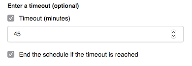
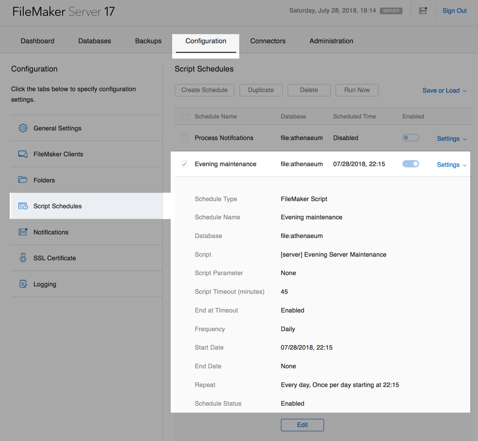
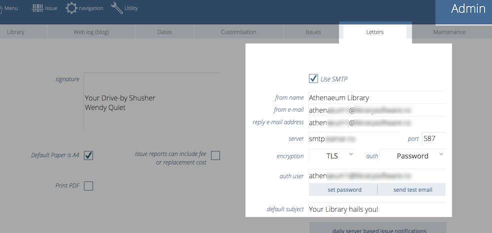
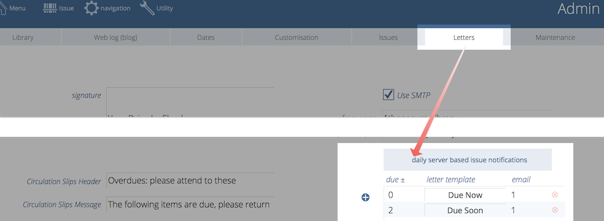
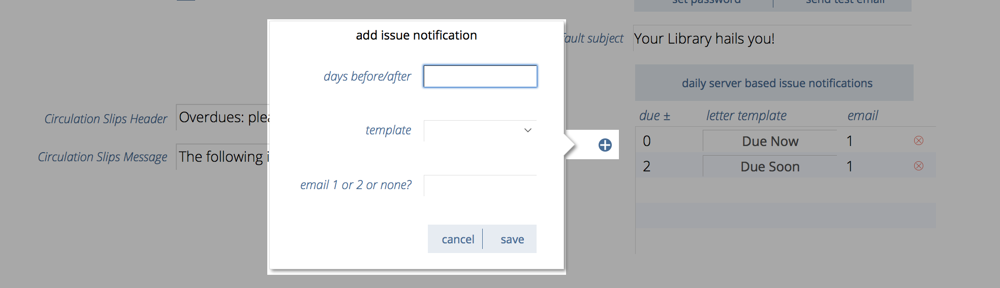
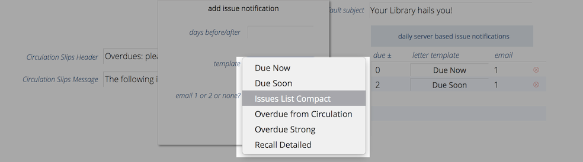
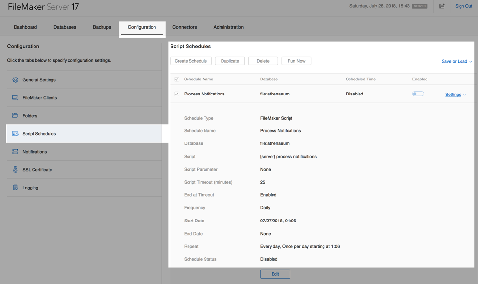

Server based automation
The recommended method to run Athenaeum is either
-
Hosted Athenaeum (a.k.a. Athenaeum Cloud)
-
Self hosted Athenaeum with FileMaker Server
-
Using FileMaker Cloud (for Australian, US, European customers)
With Hosted Athenaeum, you receive automatically all of the infrastructure you need, much of which we can customise for you. We can customise running automated tasks on your copy of Athenaeum each evening.
With Self hosted Athenaeum, you install FileMaker Server 17 (or higher) on your own dedicated server (physical or VM). You (or we, with your permission) can configure this server in a variety of ways, including running various automated tasks each evening.
When creating schedules, you will need your unique server account and password for running scripts.
Also, please set time limits for your schedules. Even though the schedules normally take up to a couple of minutes1, be generous with the time and ensure that you check the "end the schedule if timeout is reached" option.

Check your event log after the schedules are run to see if they ended normally or not.
Evening Server Maintenance
Every evening, the server can check internal values in Athenaeum for integrity and update values if needed. Certain imputed values are stored, rather than calculated on the fly for speed reasons. Occasionally, such as after certain manual imports, the stored values will need to be re-evaluated.
If you are hosting your Athenaeum on your own locally hosted server, open the FileMaker Server Admin Console and create a new script schedule that runs the script called
[server] Evening Server Maintenance
late in the evening when the server is least likely to be busy with other tasks.

Morning Server Maintenance
Every morning, the server can run a complimentary schedule that:
- processes periodicals and
- performs maintenance on ISBNs, web tables and support resources.
If you are hosting your Athenaeum on your own locally hosted server, open the FileMaker Server Admin Console and create a new script schedule that runs the script called:
[server] Morning Server Maintenance
early in the evening when the server is least likely to be busy with other tasks, e.g. 6am.
Issue Notifications
You can configure FileMaker Server to create daily automated issue notifications (i.e. emails).
Before doing so, you must ensure that Athenaeum is configured to send email via SMTP with the appropriate credentials.
Sending via SMTP
The server must send by SMTP as it does not have access to mail client such as Outlook or Apple Mail.
This is configured in the Admin->Letters tab:

Your IT support staff will advise the settings to use here.
Subject
We suggest you don't use a subject like "your library hails you" (that is a mild joke)
Defining Notifications
Issue notifications involve
- finding issues to match certain criteria
- generating letters2 for those matching issues and then
- sending those letters as emails to the borrowers for those selected set of issues.
These are configured in Admin->Letters. You may define multiple notifications and the server will process each notification in turn.

You may have as few or as many notifications as you like.
To define a new notification, click the + icon on the left of the notification list.

Enter your settings and click save to add it to the list of notifications or click cancel to not save.
The components are:
- days before/after
- selection criteria for issues based on the number of days before or after an issue is due - 0 means due the same day as the notification, a negative number is the number of days before due and a positive number is number of days after (that is, how overdue it would be)
- template
- the letter template to use when generating the notification
- email 1 or 2 or none?
- defines which borrower email to send the letter to - if you select "none" the letter will be created and stored in the letters list but not sent
Letter list
Athenaeum comes with default letters that you can use, modify or duplicate and modify:

- Due Now
- has wording appropriate for issues that are due "today"
- Due Soon
- wording to imply that issues are due "soon" whatever you define that to mean (e.g. in the next 3 days or so)
- Overdue from Circulation
- a letter for issues that is intended to convey the issues are probably "recently" Overdue
- Overdue Strong
- this is the sort of letter you might send to overdues that are "less recently" overdue
FileMaker Server Admin Console
If you are hosting your Athenaeum on your own locally hosted server, open the FileMaker Server Admin Console and create a new script schedule that runs the script called:
[server] process notifications
and schedule that to execute in the first few hours of the morning.
It's important to do this before the working day starts so that a notifications will be sent matching the number of days before or after. That is, it isn't much use receiving an email at the end of the day stating the items that will be due that day, please bring them back!
